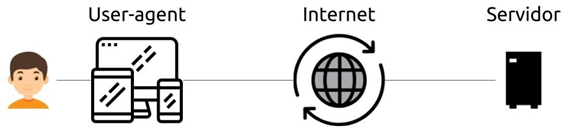
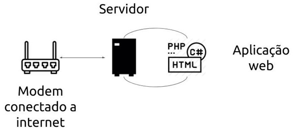

Client Server é um modelo de comunicação que vincula vários dispositivos através de uma rede, nesse contexto o cliente faz solicitações de serviços ao servidor que é responsável por atender a esses requisitos.
Voltar para o inícioÉ o que sempre inicia a comunicação com o servidor, o mais conhecido é o navegador, uma requisição é disparada pela internet para o computador (O servidor) no qual o site está hospedado.
Chamamos as aplicações que agem em nome do usuário, assim como o navegador de user-agent.
Após enviar uma requisição, o user agent aguarda até que haja uma resposta do servidor e então a comunicação se encerra. Para obter um novo recurso do servidor o cliente deve inciar uma nova requisição.
O papel do servidor web é receber uma requisição e devolver uma resposta para o Client.
Geralmente o servidor não envia dados se o Client não disparar primeiro uma requisição.
O Servidor é um ou mais computadores com um único endereço, e nesses computadores podem ser hospedados documentos, imagens, vídeos, áudios e etc.
Também hospeda programas que atendem as requisições dos clientes e as processam. Chamamos esses programas de Web Server ou Servidor Web.
É com um Web Server que nos comunicamos, sendo o computador no qual ele está instalado parte da insfraestrutura que o conecta a internet.
O Web Server é capaz de executar aplicações escritas em inguagens como PHP, C#, Java, etc.
Por exemplo, um servidor executando o PHP pode delegar a esse programa a tarefa de atender as requisições cliando páginas HTML a partir de scripts escritos nessa linguagem.
São soluções criadas que possuem a internet como meio de comunicação entre Client x Server não sendo necessário a sua instalação.
O HTML existe desde 1991 e atualmente está na versão 5, que veio recheada de recursos e funcionalidades que trazem melhorias para o desenvolvimento web, sua responsabilidade principal é demarcar a estrutura de uma página da web. Essa estrutura do HTML é formada por um conjunto de elementos, ou seja, os hipertextos, que se conectam entre si formando a página. Os elementos HTML ou também chamados de tags HTML, são utilizados para informar ao navegador que tipo de estrutura é essa que está sendo construída, podendo ser títulos, parágrafos, imagens, links, entre outros.
Dessa forma, para que um documento seja interpretado pelo navegador, é necessário que o arquivo tenha a extensão .html e a partir disso, poderá ser exibido por qualquer navegador web.
As tags são formadas por uma estrutura própria, iniciam com o sinal “menor que”, em seguida vem o nome daquele elemento e por fim, o sinal “maior que”. Podem ser dispostas em tags que precisam de fechamento e tags que fecham sozinhas (self-closing). O fechamento de uma tag será definido com uma barra (/), sendo que no caso das tags de auto fechamento, não há necessidade da presença desse caractere.
Voltar para o inícioInforma ao navegador que esse documento é do tipo HTML e sua versão. Quando está escrito apenas html, indica que é a mais recente...
Representa a raiz do documento, serve com um container que engloba todos os outros elementos HTML.
É onde fica todo o conteúdo de texto, imagem e vídeos, em que o usuário vê e interage, nele os conteúdos são estruturados pelas demais tags do HTML.
Esse elemento contém instruções de script ou aponta para um arquivo de script externo por meio do atributo src.
Compreende as informações do documento que serão interpretadas pelo navegador (metadados). Como por exemplo, título do documento, links para folhas de estilo etc.
Define metadados, ou seja, informações sobre dados de um documento HTML. As tags vão dentro do elemento e são usadas para especificar o conjunto de caracteres, o autor do documento, as configurações da janela de visualização etc.
É uma tag vazia, que contém apenas atributos e faz a relação do documento HTML com recursos externos, é comumente usado para vincular uma folha de estilo externa, também é usada para definir o favicon da página (ícone da aba do navegador), como outros recursos.
Essa tag é usada para declarar estilos (CSS) para um documento.
Tags semânticas são tags que possuem um significado, que dão sentido a informação de texto ao navegador e buscadores, como por exemplo, utilizar a tag <header> para cabeçalhos ou <article> para dar um significado de artigo para aquele bloco de texto, até mesmo <p> para indicar que aquele texto é um parágrafo, é uma boa prática tentar sempre utilizar essas tags semânticas para ajudar no entendimento do código, além de ajudar muito no SEO do site (Otimização para motores de busca, é o que ajuda o seu site a se rankear melhor nos motores de buscas como o Google). Segue abaixo a lista de tags semânticas citadas durante o artigo:
<li>Desde a origem da internet, o que torna a web o que ela é hoje é justamente a possibilidade de vincular um documento a qualquer outro documento ou recurso. Essa função é chamada de hiperlink ou link. Mas afinal de contas, o que são os links HTML?
O link HTML, nada mais é que uma função do HTML que permite inserir os hiperlinks em diversos elementos, como textos e imagens. Um link precisa sempre apontar para uma URL (endereço) existente em seu site. Caso contrário, você poderá obter uma mensagem de erro 404.
A tag link do HTML está presente desde a primeira versão, criada por Tim Berners-Lee.
No HTML, os links são definidos pela tag <a>. Dentro dessa tag incluímos o atributo href (Hypertext Reference), que é o endereço de destino do link. Dentro do conteúdo da tag , incluímos então o texto ou elemento que servirá como redirecionador, ou seja, que ao ser clicado, executará a função de redirecionar para o endereço dentro do atributo href.
Através do atributo principal da tag <a>, o href=””, podemos redirecionar o usuário a outro documento ou recurso. Existem três diferentes tipos de links utilizados para redirecionamento dentro do href. Um link pode ser: Alguns exemplos de como podem ser utilizados: Interno - <a href="#contato">>Contato</a>
Redirecionará ao elemento âncora contato. Local - <a href="../pages/pagina2.html"></a>
Redirecionará ao arquivo pagina2.html pertencente à pasta pages. Global - <a href="http://www.google.com/"></a>
Redirecionará à pagina inicial do Google Além do atributo href, também podemos incluir o atributo target dentro da tag <a>. Esse atributo informa ao navegador como o redirecionamento deverá ocorrer, abrindo a página na mesma janela/aba do navegador ou abrindo uma nova janela/aba. Os atributos targ são: O atributo title permite escrever um texto que aparecerá apenas quando passarmos o mouse por cima do link. Portanto, é um atributo importante que nos permite digitar informações úteis suplementares sobre o link, como o tipo de informação que a página contém ou avisos. Veja um exemplo de como podemos utilizar esse atributo. <a href="" title="Exemplo de como funciona o atributo title"></a> Com esse código, nosso resultado será: Confira como funciona o atributo title! Conforme o que foi explicado no tópico “O atributo href”, uma das possibilidades de utilizar o link HTML é através do redirecionamento interno, processo que também é conhecido como âncora. Para isso, utilizamos a tag para linkar duas seções da mesma página. Além disso, podemos nomear a seção ou atribuir um ID a um determinado elemento, e assim, através da âncora, acontecerá o redirecionamento ao elemento. Um ótimo exemplo de utilização desse processo, se encontra no inicio desse artigo: ao clicar nos links de qualquer um dos tópicos, você é redirecionado para essa posição! Este recurso também é muito utilizado dentro de menus de páginas únicas e landing pages. Confira o exemplo a seguir, utilizando como base o seguinte código: < href="#Início">Entendendo o HTML5</a>
Dessa forma, a sintaxe básica do HTML link é:
<a href="url">Exemplo</a>
Atributo href
Atributo target
Voltar para o início
Atributo tittle
Criando âncoras com os links HTML
Este código nos resultará este link: Ir para o início da página
Referências
Estas foram as referências que utilizei neste desafio:
Dev Media
Homehost